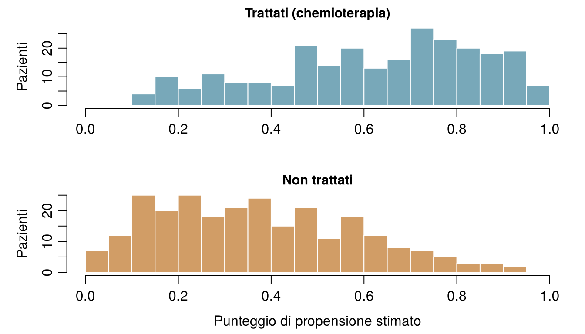

flowchart TD
S["Che cosa farai con la risposta?"] --> Q1{"Cambierai qualcosa a causa sua?<br/>trattare, sospendere, investire, definire una politica"}
Q1 -- "sì" --> I["INTERVENIRE<br/>Che cosa succederebbe se facessimo A?<br/>Serve uno studio randomizzato, o un diagramma causale<br/>più un aggiustamento (questo capitolo)"]
Q1 -- "no" --> Q2{"Ti serve un numero per una persona nuova<br/>il cui esito non è ancora noto?"}
Q2 -- "sì" --> P["PREVEDERE<br/>Che cosa accadrà a questa persona?<br/>Apprendimento supervisionato, giudicato su dati mai visti<br/>(Capitoli da 3 a 8)"]
Q2 -- "no" --> E["SPIEGARE / DESCRIVERE<br/>Quali schemi ci sono nei dati?<br/>Associazioni, gruppi, spiegazioni<br/>(Capitoli 4, da 10 a 12)"]
P --> Q3{"La previsione servirà<br/>a scegliere un trattamento?"}
Q3 -- "sì" --> I
Q3 -- "no" --> P2["La previsione basta:<br/>verifica calibrazione e trasportabilità"]
13 Dalla previsione alla causalità
Cinque domande che le équipe del Reparto 7 e di ONCO-1 potrebbero porsi. Ciascuna riguarda che cosa permetterà di prevedere un esito per qualcuno, come spiegare schemi già presenti nei dati, oppure che cosa succederebbe se intervenissimo? Prova a indovinare: la prima sezione spiega la differenza.
| Domanda | Tipo di domanda |
|---|---|
| Qual è la probabilità che Aoife sviluppi un AKI nelle prossime 48 ore? | |
| Se l'aderenza fosse portata almeno al 90 % per ogni paziente, quanti casi di AKI si eviterebbero? | |
| I pazienti dell'ospedale D hanno, in media, aumenti della creatinina maggiori di quelli dell'ospedale A? | |
| Il tumore della paziente #0042 si sarebbe ridotto di meno senza la chemioterapia? | |
| Quale dei tre pazienti di stanotte ha la probabilità più alta di aver bisogno della dialisi? |
Come usare questo capitolo
Inizi da qui?
Questo capitolo prende in prestito alcune idee dai capitoli precedenti. In breve:
- Dati osservazionali e sperimentali (Definizione 1.2). I dati osservazionali registrano ciò che è accaduto nella pratica clinica corrente; i dati sperimentali provengono da un disegno in cui lo sperimentatore assegna l’esposizione, idealmente a caso, come nello studio ONCO-1.
- Il confondimento, primo sguardo (Sezione 1.10). Nel Reparto 7 i pazienti più gravi (punteggio SOFA più alto) ricevono meno protocollo assistenziale e hanno aumenti della creatinina maggiori. Una regressione dell’aumento della creatinina sulla sola aderenza dà −0,53 per unità di aderenza; aggiungendo il SOFA si ottiene −0,30; il valore usato per simulare i dati è −0,28.
- Coefficienti (Capitolo 4, Capitolo 5). In un modello lineare \(\beta_j\) è la differenza attesa nell’esito tra due pazienti che differiscono di un’unità in \(x_j\) e sono uguali negli altri predittori del modello; in un modello logistico \(e^{\beta_j}\) è un odds ratio. Entrambi sono associazioni.
- Valore atteso (Capitolo 2). \(\mathbb{E}[Y]\) è la media di \(Y\) nel lungo periodo; \(\mathbb{E}[Y \mid A = 1]\) è la media tra coloro che hanno \(A = 1\).
- Insiemi di addestramento e di test, fuga di informazione (Sezione 1.8, Capitolo 3). I modelli predittivi si giudicano su pazienti che non hanno visto. In ONCO-1 i geni 08, 14 e 19 sono copie rumorose dell’esito (fuga di informazione, leakage); i geni che influenzano davvero la riduzione del tumore sono lo 01, lo 05 e il 12.
| Esempio | Chi o che cosa | Esito | Volti che incontrerai |
|---|---|---|---|
| 1 Terapia intensiva del Reparto 7 | 1.250 pazienti di terapia intensiva in 4 ospedali | variazione della creatinina in 48 h (danno renale acuto se ≥ 0,3 mg/dL) | Aoife (71 anni, sepsi, rischio borderline), Tomás (54 anni, rischio basso), Priya (38 anni, rischio alto); la dott.ssa Emma Walsh; Seán, il farmacista |
| 2 Studio ONCO-1 | 1.000 pazienti randomizzati a ricevere o meno la chemioterapia | riduzione del tumore (%) | i pazienti #0042 e #0917 |
| 3 HomeBeat | 500 persone che indossano uno smartwatch a casa | punteggio di stress, evento di peggioramento | Lena |
| 4 CellWorks | 420 lotti di produzione di una terapia cellulare | punteggio di potenza | il lotto CW-118 |
Tutti e quattro i dataset sono simulati e si possono scaricare dall’appendice sui dati. La presentazione completa si trova in Sezione 1.1.
Questo capitolo passa da che cosa succederà a che cosa succederebbe se. Comprende otto sezioni e un Laboratorio, sette verifiche rapide, tre widget “Prova tu”, una sfida e tre missioni di programmazione in R e Python. Calcola circa due ore. La matematica è leggera (quasi solo medie), ma le idee sono sottili: leggi con calma ed esegui il codice.
La notazione in sintesi (solo per consultazione)
| Simbolo | Significato | Sezione |
|---|---|---|
| \(A\) | trattamento o esposizione (chemioterapia sì/no; aderenza al protocollo) | Sezione 13.2 |
| \(Y\) | esito (riduzione del tumore; variazione della creatinina) | Sezione 13.2 |
| \(Y(1)\), \(Y(0)\), \(Y(a)\) | esiti potenziali: l’esito che un paziente avrebbe con il trattamento, senza trattamento o con il livello di esposizione \(a\) | Sezione 13.2 |
| \(\mathbb{E}[Y(1)] - \mathbb{E}[Y(0)]\) | effetto medio del trattamento (ATE) | Sezione 13.2 |
| \(\tau(\mathbf{x})\) | effetto medio condizionato del trattamento (CATE) per i pazienti con variabili \(\mathbf{x}\) | Sezione 13.2 |
| \(L\) | un confondente, o un insieme di confondenti | Sezione 13.3 |
| \(e(\mathbf{x})\) | punteggio di propensione: probabilità di trattamento date le variabili \(\mathbf{x}\) | Sezione 13.5 |
| \(w_i\) | peso per l’inverso della probabilità del paziente \(i\) | Sezione 13.5 |
L’elenco completo si trova nella pagina della notazione.
13.1 Tre tipi di domanda
Finora ogni capitolo ha costruito un modello che prevede: a partire da ciò che si sa oggi di un paziente, stimare che cosa gli accadrà. La previsione è utilissima (dice a Emma che il rischio di Aoife è vicino alla soglia e quello di Tomás è basso), ma è solo una delle tre cose che chiediamo ai dati (Hernán, Hsu, e Healy 2019):
- Prevedere. Che cosa accadrà a questo paziente? Una buona previsione usa qualsiasi variabile che porti informazione, qualunque sia il motivo per cui la porta. Si giudica su pazienti nuovi, in base all’errore, alla discriminazione e alla calibrazione (Capitoli 3–8).
- Spiegare (o descrivere). Quali schemi ci sono nei dati, e in che cosa differiscono i gruppi? Quanti pazienti hanno sviluppato un AKI in ciascun ospedale; quali geni sono associati alla risposta; quali pazienti formano gruppi naturali (Capitoli 4, 10–12). Sono sintesi del mondo così com’era.
- Intervenire. Che cosa succederebbe se cambiassimo qualcosa? Se somministrassimo la chemioterapia, sospendessimo un farmaco, aumentassimo l’aderenza al protocollo, finanziassimo un infermiere. È una domanda causale: riguarda un mondo che non abbiamo osservato.
Il terzo tipo è la materia di cui sono fatte le decisioni: ogni alternativa dell’insieme \(\mathcal{A}\) di Emma è un’azione, e per scegliere tra azioni bisogna sapere che cosa ciascuna causerebbe. Nella pratica, il tipo “spiegare” scivola spesso in silenzio nel terzo. “I pazienti con un’aderenza alta vanno meglio” è una descrizione; “quindi aumentare l’aderenza farà stare meglio i pazienti” è un’affermazione causale che la descrizione, da sola, non sostiene.
Un esempio classico viene dalle aule universitarie. Le dita macchiate di giallo predicono molto bene il tumore del polmone: chi le ha ha una probabilità molte volte più alta di svilupparlo. Un modello di rischio potrebbe usarle con profitto. Ma nessuno preverrebbe il tumore del polmone strofinando le dita fino a pulirle, perché le macchie non causano il tumore. Entrambi sono conseguenze di un terzo fattore, il fumo, il cui ruolo causale è stato stabilito da un’epidemiologia accurata (Doll e Hill 1950; Hill 1965). Le dita gialle sono un buon predittore e un bersaglio di intervento inutile.
L’ospedale di Seán vuole un modello per decidere a quali pazienti di terapia intensiva ridurre la dose di vancomicina per proteggere i reni. Un fornitore propone un modello che prevede l’AKI con un’AUC di 0,85. Che tipo di domanda sta davvero ponendo l’ospedale?
13.2 Interventi e controfattuali
Per porre domande causali in modo preciso serve un linguaggio per dire “che cosa succederebbe se”. Quello usato in medicina e in epidemiologia è il linguaggio degli esiti potenziali, sviluppato da Neyman per gli esperimenti (Splawa-Neyman, Dabrowska, e Speed 1990) e da Rubin per gli studi osservazionali (Rubin 1974; Holland 1986; Hernán e Robins 2020).
Definizione 13.1 (Intervento e controfattuale) Un intervento fissa una variabile a un valore scelto (somministrare la chemioterapia, fissare l’aderenza al 90 %) invece di lasciarle assumere il valore che avrebbe assunto da sola. Un controfattuale è un’affermazione su ciò che sarebbe accaduto sotto un intervento che, di fatto, non è avvenuto: “se Aoife avesse ricevuto il bundle, la sua creatinina avrebbe…”.
Indichiamo con \(A\) il trattamento (o l’esposizione) e con \(Y\) l’esito. In ONCO-1, \(A = 1\) significa chemioterapia e \(A = 0\) nessuna chemioterapia; \(Y\) è la riduzione del tumore in percentuale.
Definizione 13.2 (Esiti potenziali) Ogni paziente \(i\) ha due esiti potenziali: \(Y_i(1)\), l’esito che avrebbe se fosse trattata, e \(Y_i(0)\), l’esito che avrebbe se non fosse trattata. Per un’esposizione con molti livelli, come l’aderenza al protocollo, c’è un esito potenziale \(Y_i(a)\) per ogni livello \(a\). L’effetto causale individuale è la differenza \(Y_i(1) - Y_i(0)\).
La paziente #0042 (scheda P5440 dello studio), la paziente di 37 anni con un tumore di grado G1 che hai conosciuto nei Capitoli 4 e 5, ha ricevuto la chemioterapia in ONCO-1, e il suo tumore si è ridotto del 36,6 %: questo è \(Y_{0042}(1)\). Non osserveremo mai \(Y_{0042}(0)\), la riduzione che il suo tumore avrebbe mostrato senza chemioterapia, perché non può allo stesso tempo riceverla e non riceverla. La sua quasi gemella #0917 (P9541: stesso grado, stessa dose e stesso punteggio di performance, 46 anni) si è ridotta solo del 20,4 %, e il modello logistico lasso del Capitolo 5 ha dato loro probabilità di risposta elevata di 0,75 e 0,18. Sono previsioni di ciò che accade con la chemioterapia; nessuna delle due dice che cosa la chemioterapia abbia fatto per ciascuna di loro. È il problema fondamentale dell’inferenza causale (Holland 1986): per ogni paziente si osserva al massimo un esito potenziale; gli altri sono controfattuali. Gli effetti causali individuali, quindi, non si vedono mai direttamente.
Solo in una simulazione possiamo riempire entrambe le colonne, perché lì abbiamo scritto noi le regole che generano l’esito e possiamo rieseguirle con l’esposizione modificata, lasciando invariato tutto il resto di ciascun paziente (la Sezione 13.6 spiega come). La Tabella 13.1 mostra sei pazienti passati del Reparto 7 con l’aderenza e la variazione della creatinina registrate, e due dei loro esiti potenziali, al 50 % e al 90 % di aderenza.
| Paziente | SOFA | Aderenza osservata | Variazione osservata (mg/dL) | Y(0.5) | Y(0.9) | Effetto da 50 % → 90 % |
|---|---|---|---|---|---|---|
| ICU_0002 | 7 | 0.887 | 0.242 | 0.350 | 0.238 | −0.112 |
| ICU_0011 | 3 | 0.469 | 0.373 | 0.364 | 0.252 | −0.112 |
| ICU_0025 | 8 | 0.669 | 0.609 | 0.656 | 0.544 | −0.112 |
| ICU_0048 | 8 | 0.907 | 0.053 | 0.167 | 0.055 | −0.112 |
| ICU_0103 | 7 | 0.907 | 0.552 | 0.666 | 0.554 | −0.112 |
| ICU_0777 | 9 | 0.594 | 0.556 | 0.582 | 0.470 | −0.112 |
Guarda la paziente ICU_0048. La sua aderenza registrata era 0,907, molto vicina al 90 %, e la sua variazione osservata (0,053) è quasi esattamente il suo \(Y(0.9)\) (0,055). Questa è la consistenza: l’esito osservato è l’esito potenziale sotto l’esposizione effettivamente ricevuta. Nell’ultima colonna tutti i pazienti hanno lo stesso effetto, −0,112 mg/dL, perché la regola del simulatore è una retta senza interazioni (\(-0.28 \times 0.4\)). I pazienti reali differiscono sicuramente in quanto traggono beneficio.
Poiché gli effetti individuali non si possono osservare, puntiamo alle medie.
Definizione 13.3 (Effetto medio del trattamento ed effetto medio condizionato) L’effetto medio del trattamento (ATE, dall’inglese average treatment effect) in una popolazione è \[ \text{ATE} = \mathbb{E}[Y(1)] - \mathbb{E}[Y(0)] , \qquad(13.1)\] la differenza tra l’esito medio se tutti fossero trattati e l’esito medio se non lo fosse nessuno. L’effetto medio condizionato del trattamento (CATE) è lo stesso confronto all’interno di un sottogruppo di pazienti con variabili \(\mathbf{x}\): \(\tau(\mathbf{x}) = \mathbb{E}[Y(1) - Y(0) \mid \mathbf{X} = \mathbf{x}]\).
Confronta la Equazione 13.1 con ciò che i dati mostrano direttamente: \[ \mathbb{E}[Y \mid A = 1] - \mathbb{E}[Y \mid A = 0] , \qquad(13.2)\] la differenza tra l’esito medio di chi è capitato che fosse trattato e quello di chi è capitato che non lo fosse. La Equazione 13.1 confronta la stessa popolazione sotto due interventi; la Equazione 13.2 confronta due gruppi diversi di persone. Le due coincidono solo quando trattati e non trattati si somigliano in tutto ciò che influisce sull’esito, cioè quando sono scambiabili (exchangeable). Nel Reparto 7 non lo sono: i pazienti con un’aderenza alta sono, in media, meno gravi.
Hernán e Robins (2020) elencano tre condizioni alle quali un effetto causale può essere calcolato dai dati:
- Scambiabilità: date le covariate misurate, chi ha ricevuto quale trattamento non ha relazione con gli esiti potenziali (nessun confondimento non misurato).
- Positività: ogni tipo di paziente ha avuto una reale possibilità di ricevere ciascun trattamento.
- Consistenza: il trattamento è definito con chiarezza sufficiente perché “l’esito sotto \(A = a\)” significhi una sola cosa, e l’esito osservato coincide con l’esito potenziale sotto il trattamento ricevuto.
La consistenza sembra una pedanteria finché non provi con una domanda reale. Nel Capitolo 4 Seán si chiedeva se aumentare l’albumina di Aoife avrebbe protetto i suoi reni. L’albumina può essere più alta perché la paziente è meno infiammata, è nutrita meglio o perché ha ricevuto un’infusione di albumina; sono interventi diversi, che possono avere effetti diversi. Un dataset con livelli di albumina che variano naturalmente dice poco sulle infusioni. Prima di chiederti “qual è l’effetto di \(A\)?”, di’ esattamente che cosa faresti.
Un analista dice: “Per trovare l’effetto della chemioterapia sulla paziente #0917, confronta la riduzione del suo tumore con la chemioterapia con la riduzione senza.” Qual è la difficoltà?
13.3 Disegnare le ipotesi: i diagrammi causali
Gli esiti potenziali dicono che cosa vogliamo stimare. Per decidere come, dobbiamo dichiarare che cosa crediamo sul modo in cui le variabili si influenzano a vicenda. Il modo più trasparente è un disegno.
Definizione 13.4 (Grafo aciclico diretto (DAG)) Un grafo aciclico diretto causale (DAG, dall’inglese directed acyclic graph) è un diagramma in cui ogni variabile è un nodo e una freccia \(X \rightarrow Z\) significa “\(X\) influenza direttamente \(Z\)”. Diretto: ogni freccia ha un verso. Aciclico: seguendo le frecce non si può mai tornare al punto di partenza. Le frecce mancanti sono le ipotesi più forti del diagramma: ognuna dice “nessun effetto diretto” (Pearl 1995, 2009; Greenland, Pearl, e Robins 1999).
Qualsiasi percorso tra trattamento ed esito è una catena di frecce, percorsa in un verso o nell’altro. Bastano tre piccole strutture per capire qualsiasi DAG (Figura 13.2).
Definizione 13.5 (Confondente) Un confondente è una causa comune del trattamento e dell’esito (\(A \leftarrow L \rightarrow Y\)). Apre un percorso backdoor (“dalla porta di servizio”) da \(A\) a \(Y\), un percorso che inizia con una freccia entrante in \(A\) e lungo il quale l’associazione scorre senza alcun effetto di \(A\). Aggiustare per \(L\), confrontando simili con simili, blocca quel percorso.
Definizione 13.6 (Mediatore) Un mediatore si trova su un percorso causale dal trattamento all’esito (\(A \rightarrow M \rightarrow Y\)): trasporta una parte dell’effetto. Aggiustare per esso elimina la parte dell’effetto che passa attraverso di esso, e il risultato non è più l’effetto totale di \(A\).
Definizione 13.7 (Collider) Un collider è una variabile causata da altre due sullo stesso percorso (\(A \rightarrow C \leftarrow Y\)). Un percorso che passa per un collider resta chiuso finché lasciamo stare il collider. Aggiustare per esso, o selezionare i pazienti in base a esso, apre il percorso e crea un’associazione che non ha nulla a che vedere con l’effetto di \(A\) (Hernán, Hernández-Díaz, e Robins 2004; Cole et al. 2010).
Il collider è il meno intuitivo dei tre. Supponi che, nella popolazione generale, due malattie si presentino in modo indipendente, e che ciascuna basti a portare una persona in ospedale. Tra i pazienti ricoverati, chi non ha la prima malattia deve essere stato ricoverato per qualcos’altro, spesso la seconda. Così, nei dati ospedalieri le due malattie sembrano associate negativamente, anche se al di fuori dell’ospedale non hanno alcun legame. È il bias di Berkson (Berkson 1946): essere ricoverati è un collider, e studiare solo i pazienti ricoverati significa condizionare su di esso. I geni con fuga di informazione di ONCO-1 sono un altro esempio: i geni 08, 14 e 19 sono stati generati a partire dall’esito, quindi ne sono discendenti, e aggiustare per essi distorcerebbe l’effetto della chemioterapia esattamente come ha distorto le stime di prestazione nel Capitolo 3.
Le tre strutture si combinano in un’unica regola.
Definizione 13.8 (Criterio backdoor) Un insieme di variabili misurate \(L\) è sufficiente per stimare l’effetto causale di \(A\) su \(Y\) mediante aggiustamento se (1) blocca ogni percorso backdoor tra \(A\) e \(Y\) e (2) non contiene alcun discendente di \(A\): nessun mediatore, né collider o altra variabile causata dal trattamento (Pearl 1995, 2009). Allora, all’interno dei livelli di \(L\), pazienti trattati e non trattati sono scambiabili.
Per le dita gialle il diagramma è una biforcazione: fumo → dita gialle e fumo → tumore del polmone, senza alcuna freccia tra dita e tumore. Il percorso backdoor dita ← fumo → tumore è aperto, quindi le due cose sono associate; aggiustare per il fumo lo chiude, e tra i fumatori (o tra i non fumatori) le dita non predicono più il tumore.
Dita gialle. In questa popolazione illustrativa fuma il 30 % delle persone. Il fumo macchia le dita e causa il tumore del polmone; le macchie di per sé non causano nulla. I cursori impostano la quota di fumatori con le dita macchiate e il loro rischio di tumore del polmone (tra i non fumatori, il 5 % ha le dita macchiate e l’1 % sviluppa un tumore del polmone). Confronta il rischio relativo delle “dita gialle” nell’intera popolazione con il rischio relativo tra i fumatori e tra i non fumatori, e con ciò che otterrebbe un intervento che pulisse le dita a tutti.
Uno studio arruola solo pazienti ricoverati in terapia intensiva e trova che, tra loro, il diabete è associato a una mortalità più bassa. Sia il diabete sia una malattia acuta grave rendono più probabile il ricovero in terapia intensiva. Qual è la spiegazione più probabile?
13.3.1 Il diagramma del Reparto 7
Poiché il Reparto 7 è simulato, ne conosciamo il vero DAG: è il codice generatore di sim_ward7_icu_aki.R, disegnato come frecce (Figura 13.3). La gravità (SOFA (Vincent et al. 1996)) riduce l’aderenza al protocollo, peggiora la pressione arteriosa, aumenta l’azotemia (BUN) e la PCR e abbassa l’albumina, e tutti questi fattori influiscono sull’aumento della creatinina. L’età agisce attraverso la creatinina di base. L’aderenza influisce direttamente sull’esito e non ha nessun’altra conseguenza nei dati.
C’è esattamente un percorso backdoor, aderenza ← SOFA → creatinina (con diramazioni attraverso i marcatori di gravità, che partono tutti dal SOFA). Aggiustare per il SOFA lo blocca; nulla nei dati è un discendente dell’aderenza. Quindi, per il criterio backdoor, \(\{\text{SOFA}\}\) è un insieme di aggiustamento sufficiente, ed è per questo che la stima aggiustata del Capitolo 1 è risultata vicina alla verità.
I problemi reali sono raramente così ordinati, perciò il widget qui sotto usa il Reparto 7, versione estesa: un secondo reparto simulato con le stesse regole e tre variabili registrate in più, di cui conosciamo il ruolo. La dotazione infermieristica influisce sull’aderenza e su nient’altro. Il protocollo sospende i farmaci nefrotossici, quindi l’aderenza riduce l’esposizione a farmaci nefrotossici, che a sua volta fa salire la creatinina: un mediatore. E il protocollo prevede un dosaggio della creatinina ogni poche ore, mentre i clinici preoccupati ripetono il dosaggio quando la creatinina sale; così il numero di dosaggi di creatinina richiesti è causato sia dall’aderenza sia dall’esito: un collider. L’effetto totale dell’aderenza resta −0,28 per unità (−0,18 diretto, circa −0,10 attraverso i farmaci nefrotossici).
Scegli un insieme di aggiustamento. Spunta le variabili per cui aggiusteresti in una regressione lineare della variazione della creatinina sull’aderenza, e osserva la stima spostarsi rispetto alla verità (linea tratteggiata). Le variabili aggiustate sono evidenziate nel diagramma. Obiettivo: trova l’insieme che dà una stima non distorta con l’intervallo più stretto.
Nel widget si nascondono tre lezioni. Primo, aggiustare di più non è sempre meglio: aggiungere il collider al SOFA sposta la stima da −0,27 a −0,57, lontano dalla verità, e con un intervallo più stretto: precisa e sbagliata. Secondo, aggiustare per il mediatore dà −0,19, grosso modo l’effetto diretto: la risposta corretta a una domanda diversa (“e se l’aderenza cambiasse ma i farmaci nefrotossici no?”). Terzo, le variabili che influiscono solo sull’esito (creatinina di base) rendono la stima più nitida, mentre quelle che influiscono solo sul trattamento (dotazione infermieristica) la rendono più sfocata. Nessun test statistico sui dati può distinguere questi ruoli; solo il diagramma può farlo.
In ONCO-1 la chemioterapia riduce i tumori in parte abbassando un marcatore di proliferazione misurato alla settimana 6. Un analista stima l’effetto della chemioterapia sulla riduzione alla settimana 12 aggiustando per il marcatore della settimana 6 e trova un effetto molto più piccolo del semplice confronto dello studio. Quale affermazione è corretta?
La domanda riguarda l’effetto di una variabile A su un esito Y. Che ruolo ha la terza variabile in ciascun caso?
- A: prescrizione di una statina. Y: infarto miocardico. Terza variabile: colesterolo LDL misurato sei mesi dopo l’inizio della statina. Mediatore
- A: aderenza al protocollo nel Reparto 7. Y: variazione della creatinina. Terza variabile: punteggio SOFA al ricovero. Confondente
- A: vaccinazione. Y: influenza grave. Terza variabile: essere sottoposti a un test per l’influenza in ospedale (più probabile se le persone vaccinate sono seguite più da vicino, e se i sintomi sono gravi). Collider
- A: chemioterapia in ONCO-1. Y: riduzione del tumore. Terza variabile: essere invitati a un sottostudio di imaging, proposto ai pazienti il cui tumore si è ridotto molto e ai pazienti con effetti collaterali della chemioterapia. Collider
- A: chemioterapia in ONCO-1. Y: riduzione del tumore. Terza variabile: il gruppo sanguigno del paziente, non legato a nessuno dei due. Nessuno di questi
- A: dita gialle. Y: tumore del polmone. Terza variabile: fumo. Confondente
13.4 Randomizzazione: ONCO-1
Se il problema è il confondimento, la soluzione più pulita è eliminare le frecce entranti nel trattamento. È quello che fa una moneta.
Definizione 13.9 (Randomizzazione) In un esperimento randomizzato il trattamento è assegnato da un meccanismo casuale che gli sperimentatori controllano e che non ha relazione con alcuna caratteristica dei pazienti. Allora nessuna freccia entra in \(A\) tranne quella che viene dalla moneta, non c’è alcun percorso backdoor, e i gruppi trattato e non trattato sono scambiabili, per le caratteristiche misurate e per quelle non misurate (Fisher 1935; Hernán e Robins 2020, cap. 2).
Nel campione di ONCO-1, composto da 1000 pazienti, 496 sono stati randomizzati alla chemioterapia e 504 a nessuna chemioterapia. La randomizzazione non rende identici i due bracci, ma rende le loro differenze piccole e dovute solo al caso. Un modo standard per verificarlo è la differenza media standardizzata (SMD, dall’inglese standardised mean difference): la differenza tra le medie dei bracci divisa per la deviazione standard combinata. Valori inferiori a circa 0,1 sono di solito considerati un buon bilanciamento (Austin 2011). La prima colonna della Tabella 13.3 mostra che nello studio tutte le covariate sono bilanciate.
Poiché i bracci sono scambiabili, il confronto più semplice stima l’effetto medio del trattamento: la riduzione media è stata del 37,8 % con la chemioterapia e del 4,9 % senza, una differenza di 32,9 punti percentuali (intervallo di confidenza al 95 % da 31,8 a 34,0). Nessun modello, nessun aggiustamento, nessuna ipotesi su quali geni contino: ecco la forza della randomizzazione. È per questo che le autorità regolatorie chiedono studi randomizzati prima di approvare un trattamento, e per questo un nuovo farmaco scoperto con l’IA deve comunque superarne uno (il Capitolo 19 torna su questo punto).
Anche la randomizzazione ha dei limiti. Gli studi sono costosi e lenti; arruolano pazienti selezionati, che possono essere diversi da quelli trattati nella pratica; alcune esposizioni (il fumo, la gravità, la dotazione infermieristica di un ospedale) non si possono randomizzare; e i pazienti non sempre ricevono il trattamento a cui sono stati assegnati. Per questi motivi la maggior parte dei dati di un sistema sanitario è osservazionale, e la prossima sezione spiega come analizzarli come se provenissero da uno studio randomizzato.
La risposta dello studio. In ONCO-1 il trattamento è stato randomizzato, quindi la differenza tra la riduzione media dei due bracci stima l’effetto della chemioterapia. Completa l’ultima riga.
Il primo termine usa già mean(); il secondo deve usare la stessa funzione.
mean(treated) - mean(control)Il primo termine usa già .mean(); il secondo deve usare lo stesso metodo.
treated.mean() - control.mean()Perché la randomizzazione elimina il confondimento anche da parte di fattori che nessuno ha misurato?
13.5 Aggiustamento senza randomizzazione
Quando il trattamento non è stato randomizzato, cerchiamo di rendere equo il confronto mediante l’aggiustamento: confrontare pazienti trattati e non trattati simili in ogni confondente. Il criterio backdoor ci dice per quali variabili aggiustare; questa sezione mostra come. Tutti i metodi qui presentati poggiano sulla stessa ipotesi (che l’insieme scelto blocchi ogni percorso backdoor, cioè nessun confondimento non misurato) e differiscono nel modo in cui usano i dati.
13.5.1 Aggiustamento con la regressione nel Reparto 7
Il modo più semplice è quello usato nel Capitolo 1: inserire i confondenti in un modello di regressione insieme al trattamento. Se la forma del modello è giusta, il coefficiente del trattamento stima l’effetto. La Tabella 13.2 mostra il coefficiente dell’aderenza con diversi insiemi di aggiustamento, accanto al valore usato nella simulazione.
| Aggiustato per | Stima | IC al 95 % |
|---|---|---|
| Nessuna variabile (stima ingenua) | −0.53 | da −0.62 a −0.44 |
| SOFA | −0.30 | da −0.38 a −0.22 |
| SOFA e tutte le altre variabili registrate | −0.29 | da −0.35 a −0.23 |
| Tutte le variabili registrate tranne il SOFA | −0.40 | da −0.47 a −0.34 |
| Solo la pressione arteriosa minima (un proxy del SOFA) | −0.53 | da −0.61 a −0.44 |
| Lattato e creatinina di base (cause solo dell’esito) | −0.51 | da −0.60 a −0.43 |
Solo gli insiemi che contengono il SOFA si avvicinano a −0,28. Aggiustare per tutte le variabili registrate tranne il SOFA aiuta un po’, perché pressione arteriosa, BUN, PCR e albumina sono proxy imperfetti della gravità, ma la stima (−0,40) resta lontana: confondimento residuo. Aggiustare per le sole cause dell’esito (lattato, creatinina di base) non serve a nulla contro la distorsione. Esegui il codice per riprodurre le prime righe.
Blocca il percorso backdoor. Usando il diagramma del Reparto 7 (Figura 13.3), aggiungi al modello la variabile che blocca l’unico percorso backdoor dall’aderenza al protocollo alla variazione della creatinina. L’ultima riga stampa il coefficiente dell’aderenza.
Il confondente è il punteggio di gravità registrato al ricovero. Il nome della colonna ha quattro lettere.
fit <- lm(delta_creatinine_48h ~ protocol_adherence + sofa, data = icu)Aggiungi il nome della colonna della gravità, come stringa: quattro lettere.
cols = ["protocol_adherence", "sofa"]L’aggiustamento con la regressione funziona bene quando il modello dell’esito è giusto. Con molti confondenti, relazioni non lineari o un trattamento binario somministrato a tipi di pazienti molto diversi, è facile sbagliare il modello senza accorgersene. I tre metodi seguenti spostano lo sforzo dal modellare l’esito al modellare il trattamento.
13.5.2 ONCO-1 nella pratica clinica corrente
Per avere un riferimento, trasformiamo lo studio ONCO-1 in uno studio osservazionale. Immagina che, invece di una moneta, a scegliere fossero stati gli oncologi: avrebbero proposto la chemioterapia più spesso ai pazienti più giovani e in condizioni migliori, ai tumori di grado più alto e ai pazienti con bassa espressione di gene_05 (che uno studio precedente aveva associato a una risposta scarsa). Lo imitiamo conservando ogni paziente dello studio con una probabilità che dipende dal braccio e da queste caratteristiche (sim_ch13_onco1_routine.R). Il risultato, onco1_routine.csv, conta 509 pazienti, di cui 252 trattati. Poiché ogni paziente proviene dallo studio, sappiamo quale dovrebbe essere la risposta giusta: i 32,9 punti percentuali dello studio.
In questo dataset di “pratica clinica corrente” i pazienti trattati sono in condizioni migliori (punteggio di performance medio 0,40 contro 0,67) e hanno un gene_05 più basso, due fattori che predicono una riduzione maggiore. Il confronto ingenuo dà 38,7 punti percentuali, una sovrastima di circa 6 punti: parte del beneficio apparente è la prognosi migliore dei pazienti che gli oncologi hanno scelto di trattare.
Definizione 13.10 (Punteggio di propensione) Il punteggio di propensione (propensity score) di una paziente con covariate \(\mathbf{x}\) è la sua probabilità di ricevere il trattamento, \(e(\mathbf{x}) = P(A = 1 \mid \mathbf{X} = \mathbf{x})\). Rosenbaum e Rubin (1983) hanno dimostrato che, se aggiustare per \(\mathbf{X}\) elimina il confondimento, lo elimina anche aggiustare per il solo numero \(e(\mathbf{X})\): pazienti trattati e non trattati con lo stesso punteggio di propensione sono, in media, simili in tutte le covariate che vi sono entrate.
Nei dati osservazionali il punteggio di propensione non è noto, quindi lo stimiamo, di solito con una regressione logistica del trattamento sui confondenti (Capitolo 5). È un modello della decisione dei medici, non dell’esito. Due avvertenze: inserisci i confondenti (cause del trattamento che influiscono anche sull’esito), non variabili causate dal trattamento. dose_intensity vale zero per ogni paziente non trattato e predirebbe perfettamente il trattamento, ma è una conseguenza della decisione; e non giudicare il modello di propensione dalla sua AUC, perché ciò che conta è il bilanciamento che ottiene (Austin 2011).
Guarda i punteggi stimati prima di proseguire (Figura 13.5). Perché un aggiustamento sia possibile, i due istogrammi devono sovrapporsi: per ogni tipo di paziente trattato devono esserci pazienti non trattati con un punteggio simile, e viceversa. Questa è la positività in pratica. Dove i gruppi non si sovrappongono, qualsiasi metodo deve estrapolare.

Seguono tre modi di usare il punteggio di propensione.
Definizione 13.11 (Ponderazione per l’inverso della probabilità (IPW)) La ponderazione per l’inverso della probabilità (IPW, dall’inglese inverse probability weighting) assegna a ogni paziente trattato il peso \(w_i = 1/e(\mathbf{x}_i)\) e a ogni paziente non trattato \(w_i = 1/\{1 - e(\mathbf{x}_i)\}\), poi confronta medie ponderate: \[ \widehat{\text{ATE}}_{\text{IPW}} = \frac{\sum_{i:A_i=1} w_i\, y_i}{\sum_{i:A_i=1} w_i} - \frac{\sum_{i:A_i=0} w_i\, y_i}{\sum_{i:A_i=0} w_i} . \qquad(13.3)\] La ponderazione crea una pseudo-popolazione in cui il trattamento non dipende più dalle covariate, come in uno studio randomizzato (Hernán e Robins 2020, cap. 12; Austin 2011).
L’intuizione: una paziente trattata con \(e(\mathbf{x}) = 0.2\) appartiene a un tipo di paziente che di solito non viene trattato; nel gruppo dei trattati è rara, quindi deve rappresentare cinque pazienti come lei. Una paziente trattata con \(e(\mathbf{x}) = 0.9\) ne rappresenta solo circa una.
Definizione 13.12 (Appaiamento) L’appaiamento (matching) accoppia ogni paziente trattato con uno (o più) pazienti non trattati simili (qui, con punteggi di propensione vicini) e scarta quelli senza un buon partner. L’esito viene poi confrontato all’interno delle coppie. Poiché conserva i pazienti trattati e trova per loro dei controlli, l’appaiamento di solito stima l’effetto nei trattati (ATT) anziché l’ATE (Stuart 2010).
La stratificazione sul punteggio di propensione (confrontare trattati e non trattati all’interno, per esempio, dei suoi quintili) è una quarta possibilità con la stessa logica (Rosenbaum e Rubin 1983). Qualunque sia il metodo, verifica se ha davvero bilanciato le covariate: la Tabella 13.3 mostra le SMD prima e dopo.
| Covariata | Studio randomizzato | Pratica corrente | Dopo IPW | Dopo appaiamento | |
|---|---|---|---|---|---|
| age | Età | 0.05 | −0.42 | 0.03 | 0.02 |
| grade_G3 | Grado 3 | 0.00 | 0.34 | 0.01 | 0.05 |
| grade_G1 | Grado 1 | 0.05 | −0.17 | −0.05 | 0.06 |
| performance | Punteggio di performance | −0.07 | −0.42 | −0.02 | 0.05 |
| gene_05 | gene_05 | 0.02 | −0.75 | −0.06 | −0.06 |
La pratica clinica corrente parte da forti squilibri (gene_05 a −0,75); sia la ponderazione sia l’appaiamento portano ogni covariata sotto 0,1, vicino al bilanciamento dello studio randomizzato, ma solo per le covariate presenti nel modello di propensione. Nulla può bilanciare ciò che non è stato misurato. La Tabella 13.4 riunisce le stime.
| Metodo | Stima |
|---|---|
| Studio randomizzato (riferimento, ATE) | 32.9 |
| Confronto ingenuo | 38.7 |
| Aggiustamento con la regressione | 33.3 |
| Ponderazione per l’inverso della probabilità (ATE) | 33.6 |
| Appaiamento sul punteggio di propensione (144 coppie) | 33.4 |
Le tre stime aggiustate cadono tutte entro circa un punto dallo studio randomizzato. L’appaiamento è un po’ diverso nello spirito: stima l’effetto tra i pazienti trattati che è stato possibile appaiare. In questo dataset 108 pazienti trattati, soprattutto quelli con i punteggi di propensione più alti, non avevano un partner non trattato entro il caliper e sono stati esclusi, quindi la stima appaiata descrive i pazienti trattati più “ordinari”.
Quanto hanno scelto gli oncologi? Il cursore imposta quanto il trattamento sia dipeso dalle caratteristiche dei pazienti: 0 è una moneta (uno studio randomizzato più piccolo), 3 è una selezione molto forte. Per ogni impostazione sono stati simulati 100 dataset di pratica clinica corrente; le barre mostrano il 90 % centrale delle stime e i punti la loro media. La linea tratteggiata è la risposta dello studio randomizzato. Osserva il confronto ingenuo allontanarsi, e guarda che cosa succede alla sovrapposizione dei punteggi di propensione e alla larghezza della barra dell’IPW man mano che la selezione si fa più forte.
Man mano che la selezione cresce, i punteggi di propensione dei due gruppi si separano verso 0 e verso 1. Alcuni pazienti trattati con punteggi vicini a 0 (o non trattati vicini a 1) ricevono pesi enormi, e l’IPW diventa instabile: la positività è quasi violata. Qui l’aggiustamento con la regressione resta preciso perché il suo modello coincide con il modo in cui questi dati sono stati generati; nei dati reali sarebbe un’ipotesi, e con poca sovrapposizione starebbe estrapolando in silenzio. L’appaiamento se la cava scartando i pazienti che non riesce ad appaiare, il che cambia la popolazione descritta dalla risposta. Quando la sovrapposizione è scarsa, la conclusione onesta è spesso che i dati non possono rispondere alla domanda per tutti.
Pondera i pazienti. Il punteggio di propensione ps di ogni paziente di ONCO-1 nella pratica clinica corrente è già stato stimato con una regressione logistica su età, grado, punteggio di performance e gene_05. Completa i pesi per i pazienti non trattati; le ultime righe calcolano la stima IPW.
La probabilità di non essere trattati è 1 - ps.
w <- ifelse(obs$chemo == 1, 1 / ps, 1 / (1 - ps))La probabilità di non essere trattati è 1 - ps.
w = np.where(obs["chemo"] == 1, 1 / ps, 1 / (1 - ps))In un dataset osservazionale quasi tutti i pazienti con punteggio di performance 2 sono rimasti senza trattamento (punteggi di propensione stimati inferiori a 0,02). Qual è la conseguenza principale per l’IPW?
Tutti questi metodi condividono un’ipotesi non verificabile: che le covariate misurate includano ogni confondente. Per questo un’analisi accurata comincia mettendo per iscritto lo studio randomizzato che avrebbe voluto condurre (criteri di eleggibilità, strategie di trattamento, inizio del follow-up, esito) e poi emula questo studio target (target trial) con i dati osservazionali (Hernán e Robins 2016), e si chiude con un’analisi di sensibilità su quanto dovrebbe essere forte un confondente non misurato per cambiare la conclusione (VanderWeele e Ding 2017). I metodi che stimano come gli effetti variano da paziente a paziente, \(\tau(\mathbf{x})\), come le foreste causali (Wager e Athey 2018) e le loro versioni bayesiane per più trattamenti ed esiti correlati contemporaneamente (Sarti 2026), poggiano sulle stesse ipotesi.
13.6 Usare la verità simulata
I dati reali non rivelano mai l’effetto vero, quindi non possiamo verificare se un aggiustamento ha funzionato. I dati simulati sì, e gli esempi ricorrenti di questo libro sono stati costruiti apposta perché tu possa farlo. Il simulatore del Reparto 7 è un modello causale strutturale: un elenco di equazioni, una per variabile, ciascuna delle quali calcola la variabile a partire dalle sue cause più un rumore casuale (Pearl 2009). Il file ward7_scm.R lo riscrive come una funzione che riproduce esattamente icu_aki.csv e accetta un intervento: fissa una variabile a un valore scelto per ogni paziente, lasciando invariato il rumore casuale di ciascuno. Eseguendola due volte, con l’aderenza fissata a 1 e a 0, si ottengono entrambi gli esiti potenziali per tutti i 1.250 pazienti, e la loro differenza media è il vero ATE: −0,28 per unità di aderenza.
Torniamo ora alla domanda del comitato: portare ogni paziente ad almeno il 90 % di aderenza. Nei dati, questo aumenta l’aderenza in media di 21 punti percentuali (i pazienti già sopra il 90 % restano invariati). La Tabella 13.5 confronta la verità, ottenuta eseguendo il simulatore sotto questa politica, con ciò che prevederebbero il coefficiente ingenuo e quello aggiustato per il SOFA.
| Fonte | Coefficiente | Variazione media della creatinina (mg/dL) | AKI dopo la politica | Casi di AKI evitati ogni 1.000 pazienti |
|---|---|---|---|---|
| Simulatore (verità) | −0.28 | −0.060 | 49.5 % | 85 |
| Coefficiente ingenuo | −0.53 | −0.114 | 42.4 % | 156 |
| Coefficiente aggiustato per il SOFA | −0.30 | −0.064 | 49.0 % | 90 |
Oggi il 58 % dei pazienti del Reparto 7 sviluppa un AKI. La politica eviterebbe in realtà circa 85 casi ogni 1.000 pazienti. Il coefficiente ingenuo ne promette 156: quasi il doppio del beneficio, abbastanza da far sembrare un affare l’infermiere dedicato al protocollo, quando il ritorno reale è circa la metà. Il coefficiente aggiustato è vicino alla verità.
Il simulatore mostra anche che un buon predittore può dare l’effetto sbagliato. La Tabella 13.6 stima quattro modelli lineari sull’insieme di addestramento condiviso del libro e li valuta sull’insieme di test (Capitolo 3). Il modello con tutte le variabili tranne il SOFA prevede molto meglio del modello con il solo SOFA (pressione arteriosa, BUN, PCR e albumina portano molta informazione), eppure il suo coefficiente dell’aderenza è gravemente confuso. L’ultima riga è la regressione lineare (OLS) del Capitolo 4, con gli stessi dieci predittori e lo stesso MAE di test del registro dei modelli (0,141 mg/dL); aderenza + SOFA (0,187) prevede più o meno come la retta con il solo SOFA del Capitolo 1 (0,191). Il coefficiente del modello completo è vicino alla verità solo perché include il SOFA, non perché prevede bene.
| Modello | MAE sul test (mg/dL) | Coefficiente dell’aderenza | Simulazione |
|---|---|---|---|
| Solo aderenza | 0.222 | −0.516 | −0,28 |
| Aderenza + SOFA | 0.187 | −0.294 | −0,28 |
| Aderenza + tutte le variabili tranne il SOFA | 0.154 | −0.409 | −0,28 |
| Aderenza + tutte le variabili | 0.141 | −0.300 | −0,28 |
La verità simulata è un laboratorio, non un sostituto del ragionamento: mostra se un metodo recupera un effetto quando le sue ipotesi valgono, e quanto fallisce quando non valgono. È così che i metodi di questo capitolo sono stati sviluppati e messi alla prova, ed è così che puoi mettere alla prova qualsiasi pipeline prima di fidarti di essa su dati reali.
13.7 Che cosa significa per le decisioni
Modelli predittivi usati per decisioni di intervento. Molti modelli clinici sono costruiti per prevedere un esito e poi usati per decidere chi trattare. Due cose possono andare storte. Primo, un modello addestrato su pazienti trattati di routine prevede il rischio con le cure attuali, trattamento compreso. Un esempio famoso: un modello di mortalità per polmonite aveva imparato che i pazienti con asma avevano un rischio più basso, perché venivano mandati di routine direttamente in terapia intensiva; usato per decidere chi potesse tornare a casa, avrebbe dimesso i pazienti più vulnerabili (Caruana et al. 2015). Secondo, rischio alto non vuol dire beneficio alto: i pazienti con la probabilità più alta di sviluppare un AKI potrebbero essere proprio quelli i cui reni un bundle può aiutare di meno. Per scegliere chi trattare serve l’effetto del trattamento, \(\tau(\mathbf{x})\), o almeno il rischio senza trattamento, stimato con metodi causali (Geloven et al. 2020).
La fallacia della Tabella 2. Un articolo riporta un modello multivariabile nella “Tabella 2” e i lettori interpretano ogni coefficiente come un effetto. Solo il coefficiente della variabile per cui il modello è stato costruito ha qualche possibilità di essere causale; gli altri sono aggiustati per un insieme scelto pensando a un’altra variabile (Westreich e Greenland 2013). Il Reparto 7 lo mostra con i numeri. Nella regressione della variazione della creatinina su tutte le variabili registrate, il coefficiente del SOFA è 0,041, vicino all’effetto diretto del SOFA nel simulatore, 0,04, perché il modello tiene fissi pressione arteriosa, BUN, PCR, albumina e aderenza. Ma un paziente con un punto di SOFA in più ha anche una pressione più bassa, BUN e PCR più alti, albumina più bassa e meno aderenza; eseguendo il simulatore con il SOFA aumentato di un punto si ottiene un effetto totale di 0,060, circa il 45 % in più. Ogni domanda ha bisogno del proprio insieme di aggiustamento, e un unico modello raramente risponde a più di una.
Le spiegazioni non sono cause. I metodi che spiegano un modello predittivo (importanza delle variabili, valori SHAP, spiegazioni controfattuali) descrivono come il modello usa i propri input. Ereditano tutto il confondimento dei dati: un modello potrebbe spiegare la sua previsione di tumore del polmone con le dita gialle. Il Capitolo 12 tratta questi metodi; leggi i loro risultati come ipotesi per un’analisi causale, non come il suo esito.
Una tabella pubblicata riporta un modello logistico multivariabile dell’AKI costruito per stimare l’effetto di un antibiotico nefrotossico, aggiustato per età, gravità, creatinina di base e pressione arteriosa. L’odds ratio della pressione arteriosa è 0,80 ogni 10 mmHg. Un lettore conclude che aumentare la pressione arteriosa di 10 mmHg ridurrebbe gli odds di AKI del 20 %. Qual è il problema?
Che cosa dovrebbero dire, allora, Emma e Seán al comitato? Non “il coefficiente della società di consulenza dice che dimezzeremo gli AKI”. Piuttosto qualcosa come: l’audit grezzo e il modello di rischio esagerano il beneficio dell’aderenza perché i pazienti più gravi ricevono meno protocollo; dopo l’aggiustamento per la gravità, la nostra stima migliore è di circa −0,3 mg/dL per unità di aderenza, quindi l’infermiere proposto eviterebbe all’incirca un caso di AKI ogni 11 pazienti, a patto che la gravità sia l’unico confondente importante. Se la decisione è costosa, la risposta più affidabile verrebbe dal randomizzare reparti o mesi al nuovo infermiere.
13.8 Il posto di questo capitolo nel ciclo decisionale
Il Capitolo 1 ha definito una decisione come una scelta tra alternative in \(\mathcal{A}\), compiuta con una conoscenza \(\mathcal{K}\) delle loro conseguenze. Conseguenze di un’alternativa è un altro nome per gli esiti potenziali. Un modello predittivo fornisce un tipo di conoscenza (che cosa è probabile che accada con la pratica attuale), e spesso basta: per decidere chi tenere sotto stretta osservazione stanotte, per pianificare la capacità di dialisi, per avvisare una famiglia. Ma quando le alternative sono azioni dagli effetti incerti, l’anello dell’informazione nella catena della qualità decisionale richiede un ragionamento causale: un confronto randomizzato quando lo si può ottenere, e altrimenti un diagramma che renda esplicite le ipotesi, un aggiustamento che lo rispetti e una verifica di sovrapposizione e bilanciamento. I valori (quanto valga un AKI evitato rispetto allo stipendio di un infermiere) restano alle persone.
13.9 Laboratorio: effetti causali nel Reparto 7 e in ONCO-1
Il Laboratorio raccoglie in un unico posto il codice del capitolo: l’aggiustamento nel Reparto 7, i tre insiemi di aggiustamento del Reparto 7 nella versione estesa, il riferimento dello studio ONCO-1 e le quattro stime dalla pratica clinica corrente, con un controllo del bilanciamento. Eseguilo qui, oppure scaricalo ed eseguilo sul tuo computer: ch13_lab.it.R · ch13_lab.it.py. Il codice usa R (R Core Team 2024) e, in Python, pandas, NumPy e scikit-learn (McKinney 2010; Harris et al. 2020; Pedregosa et al. 2011).
R e Python concordano su tutto tranne che sull’appaiamento, dove i due linguaggi mescolano i pazienti trattati con generatori di numeri casuali diversi e quindi formano coppie leggermente diverse; entrambe le stime sono vicine allo studio randomizzato. Due osservazioni da portare con te. Primo, ogni stima aggiustata dipende dall’elenco dei confondenti: togli gene_05 dal modello di propensione e osserva le stime tornare verso quella ingenua. Secondo, lo studio randomizzato non ha avuto bisogno di nessuno di questi strumenti.
13.10 Esercizi
- Dai un nome alla domanda. Per ciascun esempio ricorrente (Reparto 7, ONCO-1, HomeBeat, CellWorks) scrivi una domanda di tipo prevedere, una di tipo spiegare e una di tipo intervenire. Per la domanda di intervento, descrivi l’intervento con precisione sufficiente a soddisfare la consistenza.
- Disegnalo. Disegna un DAG per l’effetto di un vaccino antinfluenzale sul ricovero in ospedale negli anziani, includendo la fragilità (le persone fragili si vaccinano meno spesso e vengono ricoverate più spesso) e una variabile a tua scelta che sia un collider. Per quali variabili aggiusteresti?
- Mediatore o confondente? Nel Reparto 7, Seán propone di aggiustare l’effetto dell’aderenza per il “numero di farmaci nefrotossici sospesi nelle prime 24 ore”. Usando il Reparto 7 nella versione estesa, spiega perché in questo modo si sottostimerebbe l’effetto totale, e quando il valore aggiustato potrebbe comunque essere utile.
- Collider per selezione. Nei dati del widget sul DAG (
ward7_dag.csv), stima l’effetto dell’aderenza aggiustando per il SOFA solo tra i pazienti con sette o più dosaggi di creatinina. Confronta il risultato con la stima su tutti i pazienti e spiega la differenza. - Proxy. Fai la regressione della variazione della creatinina del Reparto 7 sulla sola aderenza e sulla PCR. Poi su aderenza, PCR, BUN, pressione arteriosa e albumina. Perché la stima si avvicina a quella aggiustata per il SOFA, senza raggiungerla?
- Togli un confondente. Nel Laboratorio, elimina
gene_05dal modello di propensione. Ricalcola la stima IPW e la tabella del bilanciamento. Che cosa è successo, e perché nessuna diagnostica calcolata dai soli dati avrebbe potuto avvertirti? - L’aritmetica della politica. Usando la Tabella 13.5, quanti pazienti devono raggiungere il 90 % di aderenza perché si eviti un caso di AKI, secondo la verità e secondo il coefficiente ingenuo? Se un infermiere dedicato al protocollo costa quanto il trattamento di 40 casi di AKI all’anno e il Reparto 7 ricovera 1.250 pazienti all’anno, l’infermiere conviene secondo ciascuna delle due risposte?
- Tabella 2. Scegli un articolo clinico pubblicato con una tabella di regressione multivariabile. Per quale coefficiente è stato costruito il modello? Per un altro coefficiente, abbozza un DAG che mostri perché potrebbe non essere un effetto causale.
Soluzioni scelte
3. Il numero di farmaci nefrotossici sospesi è causato dall’aderenza e influisce sull’esito: un mediatore. Aggiustare per esso elimina la parte dell’effetto che passa per la sospensione dei farmaci, e si ottiene grosso modo l’effetto diretto (circa −0,19 nel Reparto 7 nella versione estesa, contro un effetto totale di −0,28). È utile se la domanda è quanta parte del beneficio viene dalla sospensione dei farmaci, una domanda di mediazione, che richiede le proprie ipotesi.
4. Limitarsi ai pazienti con molti dosaggi significa selezionare su un collider. Tra loro, un paziente con un’aderenza bassa deve essere arrivato a molti dosaggi a causa di una creatinina in aumento, quindi aderenza bassa e creatinina alta compaiono insieme più spesso del dovuto, e la stima viene spinta lontano dalla verità.
5. PCR, BUN, pressione arteriosa e albumina dipendono tutti dal SOFA, quindi aggiustare per essi elimina una parte del confondimento. Ma ciascuno ha anche il proprio rumore, perciò insieme non riproducono esattamente il SOFA: resta un confondimento residuo (−0,40 con tutte le variabili tranne il SOFA).
6. Nella pratica clinica corrente gene_05 è un confondente forte; senza di esso i pesi non ne eliminano lo squilibrio e la stima torna verso quella ingenua. La tabella del bilanciamento sembrerebbe buona per le covariate rimaste nel modello. Il bilanciamento si può verificare solo per ciò che è stato misurato e incluso, ed è per questo che l’elenco dei confondenti deve venire dalla conoscenza del dominio, disegnata come un DAG.
7. Verità: la politica evita circa 85 casi ogni 1.000 pazienti, uno ogni 12 pazienti, ossia circa 106 all’anno. Stima ingenua: 156 ogni 1.000, uno ogni 6, ossia circa 195 all’anno. Con il costo indicato, l’infermiere si ripaga secondo entrambe le risposte, ma il margine secondo la verità è circa la metà di quello promesso dall’analisi ingenua, e con un intervento più costoso le due risposte potrebbero portare a decisioni opposte.
13.11 Sintesi
- I dati rispondono a tre tipi di domanda: prevedere (che cosa accadrà?), spiegare (quali schemi ci sono?) e intervenire (che cosa succederebbe se agissimo?). Le decisioni sono fatte del terzo tipo.
- Gli esiti potenziali \(Y(1)\) e \(Y(0)\) definiscono gli effetti causali; per ogni paziente se ne osserva uno solo, quindi stimiamo medie come l’ATE, \(\mathbb{E}[Y(1)] - \mathbb{E}[Y(0)]\), e il CATE. L’identificazione richiede scambiabilità, positività e consistenza.
- Un DAG rende esplicite le ipotesi causali. I confondenti aprono percorsi backdoor e vanno aggiustati; i mediatori trasportano l’effetto e non vanno aggiustati, se si vuole l’effetto totale; i collider restano chiusi finché non si aggiusta per essi o non si seleziona in base a essi. Il criterio backdoor dice quali insiemi sono sufficienti.
- La randomizzazione elimina ogni freccia entrante nel trattamento, misurata o no; in ONCO-1 una semplice differenza tra medie stima l’effetto.
- Senza randomizzazione, aggiustamento con la regressione, punteggi di propensione, ponderazione per l’inverso della probabilità e appaiamento possono recuperare l’effetto se non manca alcun confondente. Verifica sovrapposizione e bilanciamento; una sovrapposizione scarsa rende i pesi instabili e le risposte più ristrette.
- La verità simulata permette di mettere alla prova i metodi: nel Reparto 7 la stima ingenua raddoppia il beneficio dell’aderenza, e un modello può prevedere bene pur avendo un coefficiente confuso.
- Non leggere ogni coefficiente di un modello come un effetto (fallacia della Tabella 2), e non usare una previsione del rischio con le cure attuali come se fosse una previsione del beneficio.
Dove verrà ripreso questo capitolo
| Idea di questo capitolo | Dove ritorna |
|---|---|
| Le spiegazioni di un modello predittivo non sono effetti causali | Capitolo 12 (interpretabilità e spiegazioni) |
| Le azioni, le loro conseguenze e l’apprendimento che ne deriva; regimi di trattamento dinamici | Capitolo 14 (apprendimento per rinforzo) |
| Gli studi randomizzati come livello di evidenza richiesto per i farmaci scoperti con l’IA | Capitolo 19 (dal modello linguistico all’assistente clinico) |
| Dati sintetici da un processo generativo noto | Capitolo 20 (modelli generativi) |
Prossimo capitolo: le decisioni di questo capitolo sono state prese una volta sola. Nel Capitolo 14 la decisione si ripete (una dose aggiustata giorno dopo giorno), e ogni azione cambia lo stato in cui verrà presa la successiva.
Bibliografia
Austin, Peter C. 2011. «An Introduction to Propensity Score Methods for Reducing the Effects of Confounding in Observational Studies». Multivariate Behavioral Research 46 (3): 399–424. https://doi.org/10.1080/00273171.2011.568786.
Berkson, Joseph. 1946. «Limitations of the Application of Fourfold Table Analysis to Hospital Data». Biometrics Bulletin 2 (3): 47–53. https://doi.org/10.2307/3002000.
Caruana, Rich, Yin Lou, Johannes Gehrke, Paul Koch, Marc Sturm, e Noemie Elhadad. 2015. «Intelligible Models for HealthCare: Predicting Pneumonia Risk and Hospital 30-day Readmission». In Proceedings of the 21th ACM SIGKDD International Conference on Knowledge Discovery and Data Mining, 1721–30. https://doi.org/10.1145/2783258.2788613.
Cole, Stephen R., Robert W. Platt, Enrique F. Schisterman, Haitao Chu, Daniel Westreich, David Richardson, e Charles Poole. 2010. «Illustrating Bias due to Conditioning on a Collider». International Journal of Epidemiology 39 (2): 417–20. https://doi.org/10.1093/ije/dyp334.
Doll, Richard, e A. Bradford Hill. 1950. «Smoking and Carcinoma of the Lung: Preliminary Report». British Medical Journal 2 (4682): 739–48. https://doi.org/10.1136/bmj.2.4682.739.
Fisher, Ronald A. 1935. The Design of Experiments. Edinburgh: Oliver; Boyd.
Geloven, Nan van, Sonja A. Swanson, Chava L. Ramspek, Kim Luijken, Merel van Diepen, Tim P. Morris, Rolf H. H. Groenwold, Hans C. van Houwelingen, Hein Putter, e Saskia le Cessie. 2020. «Prediction Meets Causal Inference: The Role of Treatment in Clinical Prediction Models». European Journal of Epidemiology 35 (7): 619–30. https://doi.org/10.1007/s10654-020-00636-1.
Greenland, Sander, Judea Pearl, e James M. Robins. 1999. «Causal Diagrams for Epidemiologic Research». Epidemiology 10 (1): 37–48. https://doi.org/10.1097/00001648-199901000-00008.
Harris, Charles R., K. Jarrod Millman, Stéfan J. van der Walt, et al. 2020. «Array Programming with NumPy». Nature 585 (7825): 357–62. https://doi.org/10.1038/s41586-020-2649-2.
Hernán, Miguel A., Sonia Hernández-Díaz, e James M. Robins. 2004. «A Structural Approach to Selection Bias». Epidemiology 15 (5): 615–25. https://doi.org/10.1097/01.ede.0000135174.63482.43.
Hernán, Miguel A., John Hsu, e Brian Healy. 2019. «A Second Chance to Get Causal Inference Right: A Classification of Data Science Tasks». CHANCE 32 (1): 42–49. https://doi.org/10.1080/09332480.2019.1579578.
Hernán, Miguel A., e James M. Robins. 2016. «Using Big Data to Emulate a Target Trial When a Randomized Trial Is Not Available». American Journal of Epidemiology 183 (8): 758–64. https://doi.org/10.1093/aje/kwv254.
Hernán, Miguel A., e James M. Robins. 2020. Causal Inference: What If. Boca Raton: Chapman & Hall/CRC.
Hill, Austin Bradford. 1965. «The Environment and Disease: Association or Causation?» Proceedings of the Royal Society of Medicine 58 (5): 295–300. https://doi.org/10.1177/003591576505800503.
Holland, Paul W. 1986. «Statistics and Causal Inference». Journal of the American Statistical Association 81 (396): 945–60. https://doi.org/10.1080/01621459.1986.10478354.
McKinney, Wes. 2010. «Data Structures for Statistical Computing in Python». In Proceedings of the 9th Python in Science Conference, 56–61. https://doi.org/10.25080/Majora-92bf1922-00a.
Pearl, Judea. 1995. «Causal Diagrams for Empirical Research». Biometrika 82 (4): 669–88. https://doi.org/10.1093/biomet/82.4.669.
Pearl, Judea. 2009. Causality: Models, Reasoning, and Inference. 2ª ed. Cambridge: Cambridge University Press. https://doi.org/10.1017/CBO9780511803161.
Pedregosa, Fabian, Gaël Varoquaux, Alexandre Gramfort, Vincent Michel, Bertrand Thirion, Olivier Grisel, Mathieu Blondel, et al. 2011. «Scikit-learn: Machine Learning in Python». Journal of Machine Learning Research 12 (85): 2825–30. https://jmlr.org/papers/v12/pedregosa11a.html.
R Core Team. 2024. R: A Language and Environment for Statistical Computing. Vienna, Austria: R Foundation for Statistical Computing. https://www.R-project.org/.
Rosenbaum, Paul R., e Donald B. Rubin. 1983. «The Central Role of the Propensity Score in Observational Studies for Causal Effects». Biometrika 70 (1): 41–55. https://doi.org/10.1093/biomet/70.1.41.
Rubin, Donald B. 1974. «Estimating Causal Effects of Treatments in Randomized and Nonrandomized Studies». Journal of Educational Psychology 66 (5): 688–701. https://doi.org/10.1037/h0037350.
Sarti, Danilo A. 2026. «Factorial Multivariate Bayesian Causal Forests: Heterogeneous Main and Interaction Effects of Multiple Treatments on Correlated Outcomes». arXiv preprint arXiv:2609.31332. https://arxiv.org/abs/2609.31332.
Splawa-Neyman, Jerzy, D. M. Dabrowska, e T. P. Speed. 1990. «On the Application of Probability Theory to Agricultural Experiments. Essay on Principles. Section 9». Statistical Science 5 (4): 465–72. https://doi.org/10.1214/ss/1177012032.
Stuart, Elizabeth A. 2010. «Matching Methods for Causal Inference: A Review and a Look Forward». Statistical Science 25 (1): 1–21. https://doi.org/10.1214/09-STS313.
VanderWeele, Tyler J., e Peng Ding. 2017. «Sensitivity Analysis in Observational Research: Introducing the E-Value». Annals of Internal Medicine 167 (4): 268–74. https://doi.org/10.7326/M16-2607.
Vincent, Jean-Louis, Rui Moreno, Jukka Takala, Sheila Willatts, Arnaldo De Mendonça, Hajo Bruining, C. K. Reinhart, Peter M. Suter, e L. G. Thijs. 1996. «The SOFA (Sepsis-related Organ Failure Assessment) Score to Describe Organ Dysfunction/Failure». Intensive Care Medicine 22 (7): 707–10. https://doi.org/10.1007/BF01709751.
Wager, Stefan, e Susan Athey. 2018. «Estimation and Inference of Heterogeneous Treatment Effects using Random Forests». Journal of the American Statistical Association 113 (523): 1228–42. https://doi.org/10.1080/01621459.2017.1319839.
Westreich, Daniel, e Sander Greenland. 2013. «The Table 2 Fallacy: Presenting and Interpreting Confounder and Modifier Coefficients». American Journal of Epidemiology 177 (4): 292–98. https://doi.org/10.1093/aje/kws412.